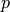

При объявлении матриц, векторов или полиномов для них иногда полезно, а иногда и необходимо определять кольца. Кольцо - это математическая конструкция, в которой существуют определенные понятия суммы и произведения. Если данная темя не знакома, вполне хватит знаний о четырех часто используемых кольцах:
 , называемые ZZ в Sage.
, называемые ZZ в Sage.Знание различий между данными кольцами очень важно, так как один и тот же полином, определенный в разных кольцах, может вести себя
по-разному. Например, полином  имеет два корня: . Эти корни не являются
рациональными числами, поэтому если вы работаете с полиномами с рациональными коэффициентами, то полином не будет разлагаться на множители.
С вещественными коэффициентами - будет. Поэтому стоит определить кольцо, чтобы быть уверенным, что полученный результат будет правильным.
Следующие две команды задают множества полиномов с рациональными коэффициентами и вещественными коэффициентами соответственно. Множества
названы “ratpoly” и “realpoly”, но это не столь важно в данном контексте, однако символьные сочетания
“.<t>” и
“.<z>” являются названиями переменных, использованных в двух случаях.
имеет два корня: . Эти корни не являются
рациональными числами, поэтому если вы работаете с полиномами с рациональными коэффициентами, то полином не будет разлагаться на множители.
С вещественными коэффициентами - будет. Поэтому стоит определить кольцо, чтобы быть уверенным, что полученный результат будет правильным.
Следующие две команды задают множества полиномов с рациональными коэффициентами и вещественными коэффициентами соответственно. Множества
названы “ratpoly” и “realpoly”, но это не столь важно в данном контексте, однако символьные сочетания
“.<t>” и
“.<z>” являются названиями переменных, использованных в двух случаях.
sage: ratpoly.<t> = PolynomialRing(QQ)
sage: realpoly.<z> = PolynomialRing(RR)
Факторизируем :
sage: factor(t^2-2)
t^2 - 2
sage: factor(z^2-2)
(z - 1.41421356237310) * (z + 1.41421356237310)
Символ I обозначает квадратный корень от  ; i синонимично I.
Конечно, это не рациональное число:
; i синонимично I.
Конечно, это не рациональное число:
sage: i # square root of -1
I
sage: i in QQ
False
Заметка: Вышеописанный код может работать не так, как задумывалось, если переменной i было задано другое значение, например, если оно было использовано, как счетчик для цикла. В таком случае введите
sage: reset('i')
для того, чтобы получить изначальное комплексное значение i.
Есть одна тонкость в задании комплексных чисел: как описано выше, символ i
представляет квадратный корень от , но это
формальный или символичный квадратный корень от . Вызов CC(i) или
CC.0 вернет комплексный квадратный корень от .
sage: i = CC(i) # floating point complex number
sage: i == CC.0
True
sage: a, b = 4/3, 2/3
sage: z = a + b*i
sage: z
1.33333333333333 + 0.666666666666667*I
sage: z.imag() # imaginary part
0.666666666666667
sage: z.real() == a # automatic coercion before comparison
True
sage: a + b
2
sage: 2*b == a
True
sage: parent(2/3)
Rational Field
sage: parent(4/2)
Rational Field
sage: 2/3 + 0.1 # automatic coercion before addition
0.766666666666667
sage: 0.1 + 2/3 # coercion rules are symmetric in SAGE
0.766666666666667
Далее следуют примеры базовых колец в Sage. Как отмечено выше, кольцо рациональных чисел обозначается как QQ, а также как RationalField() (поле - это кольцо, в котором произведение является коммутативным и в котором каждый ненулевой элемент имеет обратную величину в этом кольце (рациональные числа являются полем, а целые - нет):
sage: RationalField()
Rational Field
sage: QQ
Rational Field
sage: 1/2 in QQ
True
Десятичное число 1.2 рассматривается как QQ:
десятичные числа, которые также являются рациональными, могут быть “приравнены” к рациональным числам.
Числа  и не являются рациональными:
и не являются рациональными:
sage: 1.2 in QQ
True
sage: pi in QQ
False
sage: pi in RR
True
sage: sqrt(2) in QQ
False
sage: sqrt(2) in CC
True
Для использования в высшей математике Sage также может выполнять операции с другими кольцами, как конечные поля, числа , кольцо алгебраических чисел, полиномиальные кольца и матричные кольца. Далее показаны некоторые из них:
sage: GF(3)
Finite Field of size 3
sage: GF(27, 'a') # need to name the generator if not a prime field
Finite Field in a of size 3^3
sage: Zp(5)
5-adic Ring with capped relative precision 20
sage: sqrt(3) in QQbar # algebraic closure of QQ
True